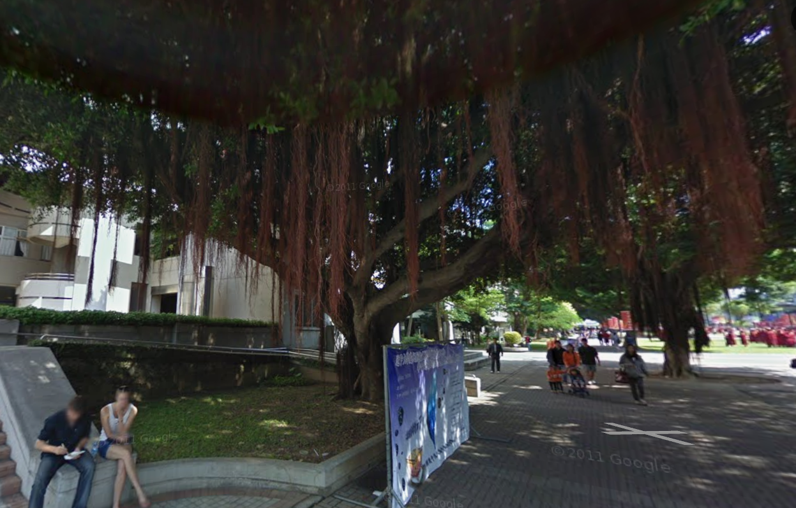
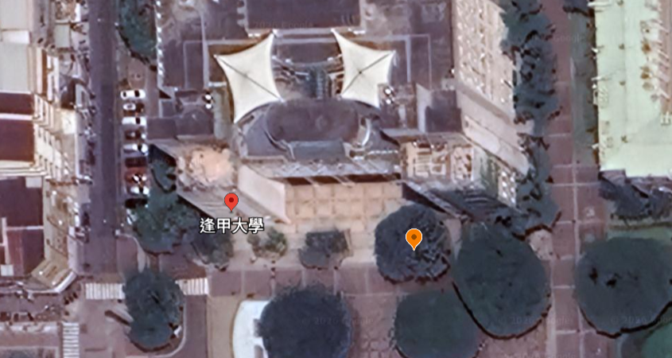
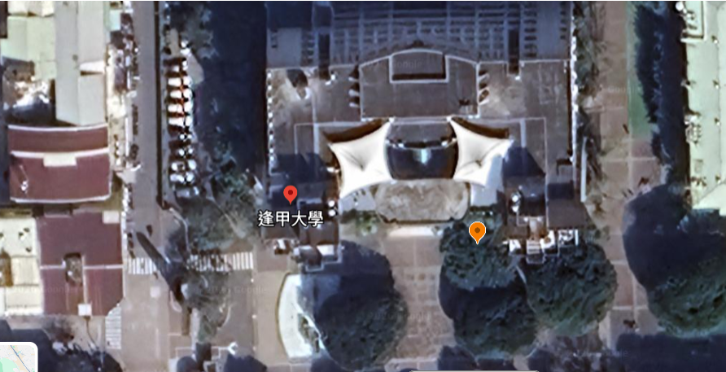
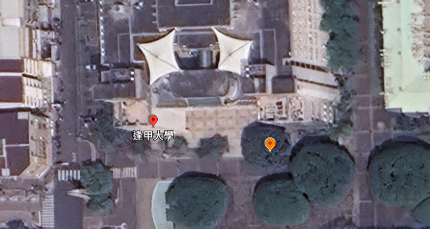
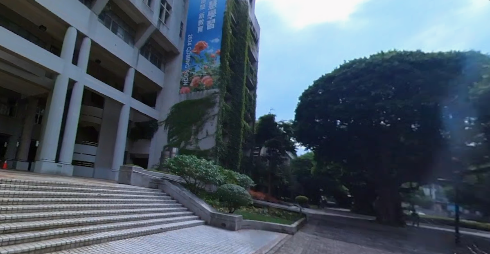
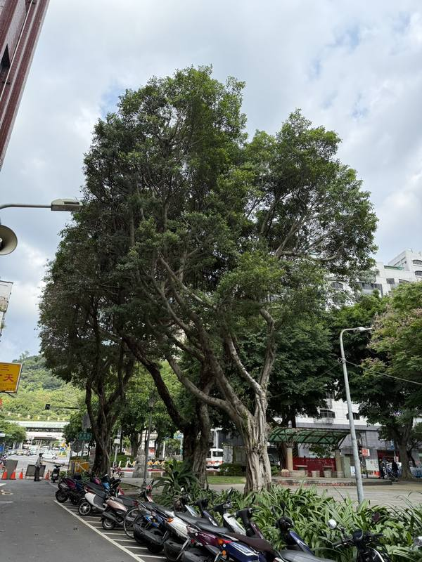
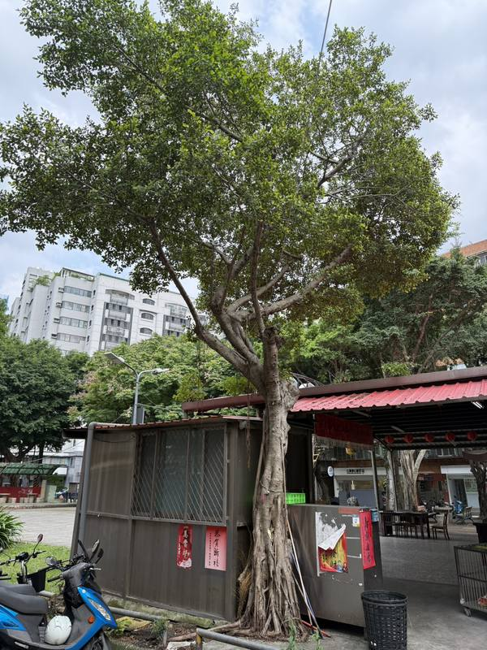
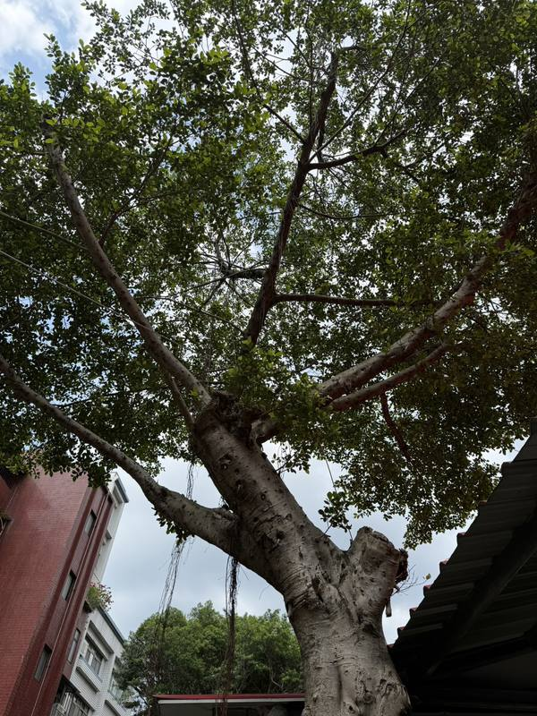
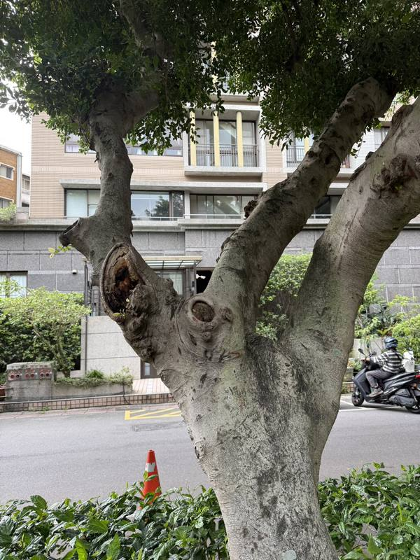

天災，還是人禍？
近年來，台灣各地接連發生路樹無預警倒伏事件，從校園到街頭行道樹，從壓毀車輛到奪走人命，城市裡原本象徵綠意與安全的行道樹，逐漸成為潛伏的風險。
「我到現場的時候，有一段將近40公分的枝幹被截斷，那不是最近修剪的痕跡，不定芽已經長出來，代表至少是3年、甚至5年前留下的傷口。」
大安森林之友基金會副執行長陳鴻楷對榕樹而言，這樣的大面積切口難以癒合，長年暴露之下導致樹勢逐漸變弱，反而成為病菌入侵的破口。





2010年：60年老榕樹
逢甲大學知名榕樹大道1棵樹齡約60年老榕樹，這個地方是校內許多學生上學必經之路；倒伏榕樹所在花台寬約6.5公尺，但校園內仍有不少榕樹種在僅約1公尺見方的狹小花台中，樹體卻同樣龐大。
2023年：觀察樹冠變化
逢甲大學知名榕樹大道1棵樹齡約60年老榕樹，這個地方是校內許多學生上學必經之路。
2024年：修剪後驟然縮小
一年後，同一批樹的樹冠明顯縮減。陳鴻楷指出，過度修剪降低光合作用能力，會樹勢逐漸衰弱。
2025年：倒下，奪走生命
2025年6月，其中一棵榕樹無預警倒塌，釀1死3傷。相關調查發現根部已有褐根病跡象。
事發後：樹木已被移除
事故發生後，相關樹木遭緊急移除，事故發生後，陳鴻楷於五天內及數月後兩度回訪，相關花台仍未見明顯改善。
颱風一來，討論爆增
風過之後，歸零
每逢颱風或倒樹傷亡，聲量急升；褐根病與修剪修剪關鍵字全年幾近於零
資料來源：Opview社群口碑資料庫（2025年5月—2026年4月） 製圖：林子皓
褐根病佔近六成
根據林木疫情鑑定與資訊中心通報資料，以台北市2016至2025年為例，褐根病始終是最大宗的病害，佔所有通報的近六成，且數量持續攀升，遠超其他病害種類。
每年通報數持續增加
褐根病菌會入侵樹木的根部組織，導致原本堅固的根部變得脆弱，影響根部吸收養分，最終導致支撐力下降，最終倒下。
資料來源：農業部林業試驗所林木疫情鑑定與資訊中心（2016–2025，臺北市）；製圖：張耀銘、吳冠廷
文山、大安、中山
是褐根病通報高
根據數據顯示，從2016年到2025年為止，台北市十二個行政區中，文山區以769件高居第一，大安區（707件）、中山區（585件）緊追在後，三區合計佔全市總量的約四成。
每一個點，
都是一棵生病的樹
點位遍布全台北市，且往往集中在人口密集、行人頻繁活動的區域，與市民日常生活高度重疊。
資料來源：農業部林業試驗所林木疫情鑑定與資訊中心
通報驟降，防治見效？
2025年全市僅通報91件，降至近十年新低，但在2026年前四個月已反彈至197件，超越2025年全年。
文山、大安、中山
是褐根病累計通報數最高
十年以來，台北市十二個行政區中，文山區以769件高居第一，大安區（707件）、中山區（585件），這些也正是人口最密集、行道樹最多的市中心地帶。
每一個點，
都是一棵生病的樹
點位遍布全台北市，且往往集中在人口密集、行人頻繁活動的區域，與市民日常生活高度重疊。
資料來源：農業部林業試驗所林木疫情鑑定與資訊中心
紅點蔓延城市中
2025年全市僅通報91件，降至近十年新低，根據統計，2026年前四個月已反彈至197件，超越2025年全年累計。
外表相同，命運截然不同
廟旁邊的這兩棵榕樹，一棵健康，一棵已感染褐根病，葉色轉黃、枝葉稀疏，差異在地表上隱約可見，地下的根部，早已是兩個世界。




攝影：吳冠廷
這棵樹，只能被移除
榕樹天生樹種對褐根病菌抗病性不佳，再加上鋪水泥限制它的根系發展，加上因為不當修剪造成傷口比較大，無法自行癒合就容易得病，在這種「先天不足，後天失調」的情況下，就只能被移除，留下一顆「樹頭」。
移除，不是砍到底
東昕環境工程有限公司樹藝師林辰如表示，病樹與一般移樹差不多，都是由上而下慢慢截下來，並會刻意留下一個「樹頭」，之所以不砍到底，是因為根部對下方的作業人員來說很難立即清理，通常會把移除樹頭與後續的補植工程綁在一起。
無聲蔓延的褐根病
台灣大學植物病理與微生物學系教授兼系主任鍾嘉綾表示，褐根病基本上屬於「木材腐朽菌」，一般的木材腐朽菌主在森林生態系裡擔任分解者的角色，能把倒塌的樹木分解成其他微生物可運用的營養，只有很少數能去感染活的組織與樹木，而在台灣主要就是褐根病。倒下的那一刻，往往是病程的終點，而不是起點。
褐色網網紋，是它的烙印
褐根病侵入根部後，會在木質部留下典型的灰白、黃褐色網紋狀菌絲。這個特徵是判斷感染的重要依據，但通常只有在挖開根部或樹木倒塌後才看得見。
木質組織軟化、纖維化
病菌持續分解木質部，使原本堅固的樹幹內部失去承載力，變得鬆散易碎。孫岩章描述：「夏天1天會擴展1公分，時間一久就把裡面軟化。」
這就是褐根病的樣子
鍾嘉綾表示，樹木感染不容易發現，通常發現大概都到了中、後期，不同樹種表現病徵不同，像樟樹或榕樹可以撐比較久，會逐漸出現葉子變小、變黃等等，而病徵不明顯的樹種，可能到夏季病菌比較旺盛時，就突然呈現枯死狀態。
一棵病樹，如何感染整條街？
選擇傳播模式，逐步觀看病菌透過不同途徑擴散的過程。
選擇上方傳播模式，再點擊「下一步」逐步觀看病菌如何擴散。
褐根病初期不易發覺
鍾嘉綾表示，樹木感染不容易發現，通常發現大概都到了中、後期，不同樹種表現病徵不同，像樟樹或榕樹可以撐比較久，會逐漸出現葉子變小、變黃等等，而病徵不明顯的樹種，可能到夏季病菌比較旺盛時，就突然呈現枯死狀態。
一旦褐根病進入中後期，治療幾乎已無可能。對街道上那些被列管、但預算有限的路樹而言，生病後的選項，往往只剩移除。
台灣大學植物病理與微生物學系系主任 鍾嘉綾感染之後，幾乎只有一條路
技術上，褐根病有藥可醫。但在都市路樹的現實條件下，選項幾乎不存在。
「學術上已經認定這個菌在土壤裡面不會存活，邁隆是多的。目前還是到處都是，成效也不好，生態也不好。」
臺灣植物及樹木醫學學會理事長孫岩章一旦褐根病進入中後期，治療幾乎已無可能，鍾嘉綾表示，「除非搭配外科手術把生病的地方切掉，但這費用很高，通常只用於珍貴老樹。」
對街道上那些被列管、但預算有限的路樹而言，生病後的選項，往往只剩移除。
鍾嘉綾與研究團隊發現，只要將感染的木材殘體徹底挖除，土壤中其實不會殘留活菌，問題在於，廠商往往在地下根系清理不乾淨的情況下，就進行熏蒸，「如果只熏了上層50公分，底下沒清乾淨的根還是帶菌，重新種樹還是會再感染。」
對於褐根病防治上，鍾嘉綾在人工接種實驗理發現，「如果樹木非常健康且沒有傷口，即便放了一堆菌也不會感染」。都市樹木一方面常有小傷口，一方面生長環境差、體質衰弱，一旦感染就不容易產生防禦阻隔反應。
褐根病不是無差別殺手，它需要一個破口，而那道破口，從究竟哪裡來？